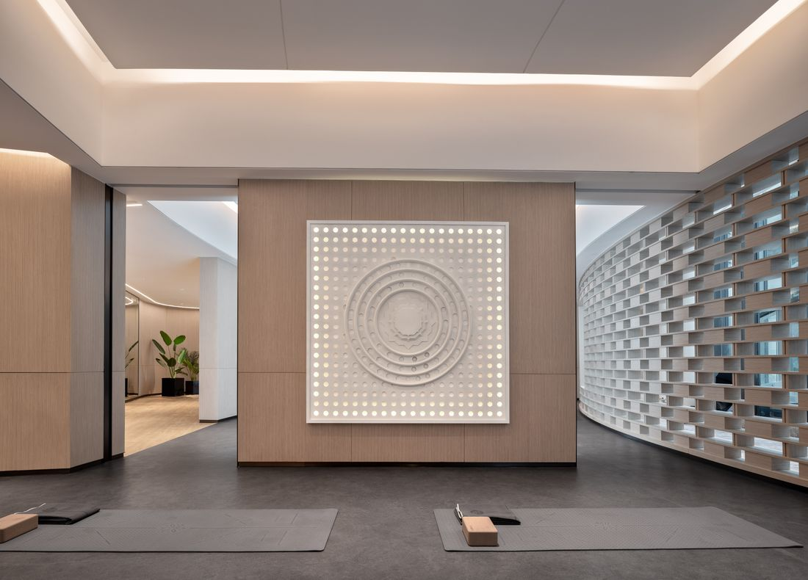
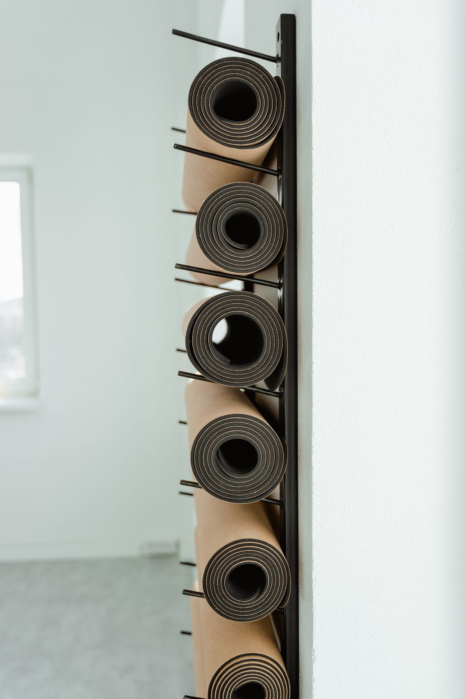

Yoga suave
Sequência acessível e ritmo calmo.
Um lugar para explorar movimento do seu jeito. Comece por uma aula que conversa com o que você procura agora.
Encontrar uma aula
O ponto de partida muda. Aqui há três modos de experimentar movimento, sem comparar corpo, ritmo ou experiência com ninguém.
Escolha pela intenção. A sugestão da avaliação é exploratória, sem prometer resultado ou vaga.

Quem está começando pode explorar uma opção sem precisar definir uma meta de desempenho. Horários e detalhes de aula são assuntos para conversar, não promessas nesta página.
Explorar meu ponto de partidaDuas escolhas ajudam a indicar uma modalidade para explorar. A sugestão não é avaliação clínica nem reserva de aula.
Demonstração fictícia. Estúdio, aulas e contato são exemplos; não há matrícula ou aula reservada.
Sem JavaScript, consulte as modalidades acima e use o contato apenas como exemplo. Esta demonstração não reserva aula nem recebe matrícula.